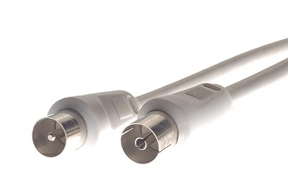
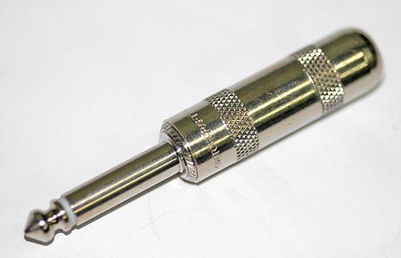

Il nome corretto per il connettore d'antenna è connettore Belling-Lee o connettore IEC 60169-2, ma molto spesso chiamato presa TV. È posto normalmente sul retro del televisore e su una presa a muro. Si utilizza per collegare il ricevitore terrestre all'antenna posta sul tetto tramite un cavo coassiale.

Il connettore jack noto anche come spinotto jack o semplicemente jack è un connettore elettrico usato per trasportare segnali per lo più audio in forma analogica in bassissima tensione.